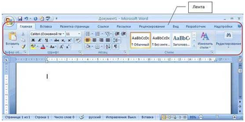

ЛЕКЦИЯ № 15. (2 часа)
ТЕМА: «ВВОД И РЕДАКТИРОВАНИЕ ТЕКСТА ДОКУМЕНТОВ WORD»
Рассматриваемые вопросы:
1.Создание документа
2.Ввод текста в документ
3.Редактирование текста
4.Пошаговая инструкция форматирования текста
Литература: учебник Информатика и ИКТ» М.С. Цветкова, «Академия», 2011, стр.177-184
1.Создание документа
Создание документа начинается с запуска приложения Microsoft Word 2007. Для создания документа надо запустить приложение Word 2007 одним из трех способов.
Откроется окно приложения Microsoft Word 2007, в котором отображается пустой документ "Документ 1" (Рис. 2.1.3.1), основанный на шаблоне без содержимого, т.е. на пустом шаблоне. Необходимо отметить, что по умолчанию в окне приложения Word 2007 на "Ленте" открывается вкладка Главная. На вкладке Главная расположены все инструменты для ввода текста в документ и его редактирования.
Напоминаю, что Лента - это область окна приложения, расположенная между строкой заголовка (Документ 1 - Microsoft Word) и окном редактирования документа (область окна приложения белого цвета, в которой вводится текст и другие объекты документа). В поле окна редактирования документа в верхнем левом углу отображается мигающий курсор ввода (мигающая вертикальная линия), который указывает на то, где будет вводиться с клавиатуры символ или вставляться объект (таблица, рисунок и т.д.).

Создаваемый документ целесообразно сохранить до ввода в него текста. Для сохранения документа можно щелкнуть на кнопке "Сохранить" на "Панели быстрого доступа" или щелкнуть на кнопке "Office" и выбрать команду "Сохранить", откроется окно диалога Сохранение документа.
2.Ввод текста в документ
Текст вводится в том месте документа, где мигает курсор. Документы в Word могут быть созданы путем ввода текста с клавиатуры. Кроме того, создать документ можно методом копирования и вставки текста из других документов. Необходимо отметить, что в создаваемом документе по умолчанию ориентация страницы - книжная, размеры полей страницы: верхнее и нижнее - 2 см, левое - 3 см, правое - 1,5 см.
Кроме того, в создаваемом документе по умолчанию символы вводятся в режиме "вставка", а текст вводится в стиле Обычный (Экспресс-стиль), в котором установлены основные параметры форматирования абзаца:
При вводе текста с клавиатуры курсор сдвигается вправо. При достижении конца строки продолжайте вводить текст, курсор автоматически переместится на следующую строку. Когда будет завершен ввод текста первого абзаца, необходимо нажать клавишу Enter (Ввод), чтобы перейти к вводу текста следующего абзаца. Затем вводится следующий абзац. При достижении конца страницы продолжайте вводить текст, курсор автоматически переместится на следующую страницу. Таким образом, весь текст документа состоит из абзацев. Заголовки и списки документа - это тоже абзацы.
Абзац - это непрерывная часть текста, которая заканчивается нажатием клавиши Enter (Ввод). Если в Word включен режим отображения скрытых символов форматирования, то при нажатии Enter (Ввод) в конце абзаца появится знак абзаца (непечатаемый символ конца абзаца).
Знаки абзацев, жесткие пробелы и другие скрытые символы форматирования отображаются при нажатии кнопки "Отобразить все знаки" на вкладке Главная. На рисунке представлен скриншот окна приложения, в котором отображается документ "Мой первый документ" в режиме "Отобразить все знаки". Документ сохранен в формате ".docx".
Необходимо отметить, что при вводе текста между словами устанавливайте один жесткий пробел. Жесткие пробелы устанавливаются нажатием клавиши Spacebar (клавиша пробела - это длинная нижняя клавиша без названия), а мягкие пробелы устанавливаются редактором автоматически при форматировании текста. Кроме того, жесткие пробелы не устанавливайте между словами и знаками препинания, а также между словами и кавычками или скобками. После знака препинания пробел обязателен, но не в конце абзаца.
Неразрывный пробел устанавливайте посредством одновременного нажатия трех клавиш Ctrl + Shift + Spacebar. Неразрывные пробелы целесообразно применять, например, между инициалами и фамилией в том случае, когда при вводе инициалов и фамилии они оказываются на разных строках. В этом случае применение неразрывных пробелов обеспечит неразрывность инициалов и фамилии, и они будут размещены на одной строке, а не на разных строках.
Знак "дефис" в тексте всегда вводится без пробелов клавишей "-". В некоторых случаях в текст вводится "неразрывный дефис" с помощью одновременного нажатия клавиш "Ctrl" + "Shift" + "дефис". Знак "тире" ("длинное тире") выделяется пробелами с двух сторон, а вводится с помощью одновременного нажатия комбинации клавиш "Ctrl" + "Alt" + "серый минус".
3.Редактирование текста
Редактирование предназначено для устранения ошибок, перемещения символов, слов, строк, фрагментов и внесение других изменений в содержимое документа. Редактирование документа осуществляется как в процессе ввода текста, так и после его ввода. Как правило, редактирование текста выполняется перед форматированием и применением стилей.
К средствам редактирования относятся следующие команды (кнопки, которых расположенные на вкладке Главная):
Кроме того, для редактирования текста используются клавиши клавиатуры Del, Backspace, Spacebar и применяется средство DragandDrop ("перетащи и отпусти" при нажатой левой или правой кнопки мыши).
Все средства редактирование текста документа подробно изложены на страничке "Средства редактирования текста документов в Word 2007". На этой страничке рассмотрим подробно проверку правописания как средство редактирования текста.
В приложении Microsoft Word 2007 по умолчанию установлены следующие способы проверки правописания:
Способы проверки, установленные по умолчанию, можно отменить, для этого надо выполнить команду Office/Параметры Word/Правописание и в появившемся окне диалога удалить соответствующие флажки.
Суть проверки орфографии заключается в том, что для проверки написания слова редактор сравнивает это слово со словарем Microsoft Office 2007, при этом неизвестные слова редактор подчеркивает волнистой красной линией. Таким образом, волнистая красная линия свидетельствует либо об ошибке в слове, либо о том, что в словаре Office 2007 такое слово отсутствует.
Что касается проверки грамматики, то редактор проверяет грамматические и стилистические правила письма (несогласованность подлежащего и сказуемого, неверные предложные сочетания). При наличии возможных ошибок в предложении редактор подчеркивает волнистой зеленой линией предложение или его часть.
Для проверки и исправления ошибок можно использовать контекстное меню, щелкнув правой кнопкой мыши на слове с волнистой линией. При проверке орфографии - в появившемся контекстном меню выберите одно из действий: пропустить слово, откорректировать его или занести в словарь. При проверке грамматики - для устранения ошибок выберите одну из предлагаемых команд в контекстном меню.
Для ручной проверки орфографии и грамматики необходимо установить курсор вначале текста и выбрать команду Рецензирование/Правописание, появится окно диалога "Правописание", с помощью которого можно выполнить требуемую проверку.
В появившемся окне диалога "Правописание" отображается первое предложение с ошибкой и записью в разделе "Варианты": Не хватает запятой после слова документ. Для устранения ошибки надо щелкнуть на кнопке "Изменить" и продолжать работу с окном диалога до завершения полной проверки текста.
После завершения редактирования текста документа надо выполнить его форматирование, т.е. изменить его внешний вид.
После редактирования текста необходимо изменить его внешний вид, т.е. оформить документ или выполнить его форматирование. Word 2007 позволяет форматировать символы, абзацы, таблицы, страницы, разделы и документ в целом.
К атрибутам форматирования символов относятся: гарнитура шрифта, размер шрифта, начертание шрифта (полужирное, курсивное, подчеркнутое), цвет выделения текста, цвет текста, регистр, интервал между символами в слове и т.д.
К параметрам форматирования абзацев следует отнести: выравнивание текста (по левому или правому краю, по центру, по ширине), отступы абзацев, отступы первой строки абзацев, межстрочный интервал, заливка цвета фона, маркеры и нумерация списков и т.д.
К элементам форматирования таблиц можно отнести: границы и заливка (более подробно рассмотрим в разделе Работа с таблицами).
Основные параметры форматирования (оформления) страниц: границы рабочего поля (поля сверху, снизу, слева, справа), размеры страницы, ориентация страниц.
К форматированию разделов относится создание новых разделов со следующей страницы или на текущей странице, колонтитулы разделов, создание колонок и т.д.
Форматирование документа в целом - это форматирование номеров страниц, оформление автособираемого или ручного оглавления и т.д.
В Word 2007 основные средства форматирования текста, абзацев и таблиц помещены на вкладке Главная. Для быстрого форматирования вручную символов (текста) и абзацев можно использовать команды в группе Шрифт и Абзац на вкладке Главная.
Кроме того, кнопки форматирования доступны на Мини-панели инструментов, которая появляется при наведении указателя мыши на выделенный фрагмент текста.
Необходимо отметить, что существует еще один инструмент для быстрого форматирования текста - это кнопка "Формат по образцу" в группе "Буфер обмена" на вкладке "Главная", которая позволяет копировать параметры форматирования одного фрагмента и переносить на другой фрагмент текста при его выделении.
Для быстрого и одновременного изменения нескольких атрибутов форматирования символов и абзацев можно использовать Экспресс-стили из группы стили на вкладке Главная.
Стили предназначены для оформления текста документа и его абзацев. Для форматирования символов и абзацев вручную используют не только кнопки для быстрого форматирования, но и окна диалога Шрифт и Абзац, которые активизируются кнопками на вкладке Главная в группах Шрифт и Абзац соответственно.
4.Пошаговая инструкция форматирования текста
По умолчанию новый документ создается в стиле Обычный, а это означает, что весь текст выглядит одинаково. Но с помощью средств форматирования всегда можно изменить внешний вид документа. Для этого необходимо выделить символ, фрагмент или абзац и щелкнуть указателем мыши на требуемую кнопку, чтобы применить другой формат.
Отформатируем текстовый документ, который мы создали и отредактировали в разделе "Ввод и редактирование текста документов", скриншот которого представлен на рисунке.
Этапы форматирования текста документа:
В результате получим отформатированный текст документа, скриншот которого представлен на рисунке.
Для больших документов (рефератов, курсовых и дипломных работ) кроме форматирования символов, абзацев и страниц выполняется форматированию разделов и документа в целом. Эти этапы форматирования большого документа рассмотрим в разделе: Работа с большими документами в Word 2007.
Большие документы (структурированные документы, содержащие несколько страниц), как правило, разбиваются на разделы. Создание новых разделов со следующей страницы или на текущей странице, вставка верхнего и нижнего колонтитулов для предыдущего и следующего разделов, создание газетных колонок - все это относится к этапам форматирования документа.
Разрывы разделов выполняются на вкладке Разметка страницы в группе Параметры страницы, кнопка Разрывы. Вставка колонтитулов выполняется на вкладке Вставка в группе Колонтитулы, а работа с колонтитулами выполняется на вкладке Конструктор, которая появляется на Ленте при работе с колонтитулами.
Форматирование документа в целом - это форматирование номеров страниц, оформление автособираемого или ручного оглавления и т.д. Номера страниц вставляются на вкладке Вставка в группе Колонтитулы. В диалоговом окне необходимо установить параметры формата номера страницы: Формат номера, Включить номер главы, Нумерация страниц (Продолжить или Начать с). Оглавление добавляется в документ на вкладке Ссылки в группе Оглавление, кнопка Оглавление.